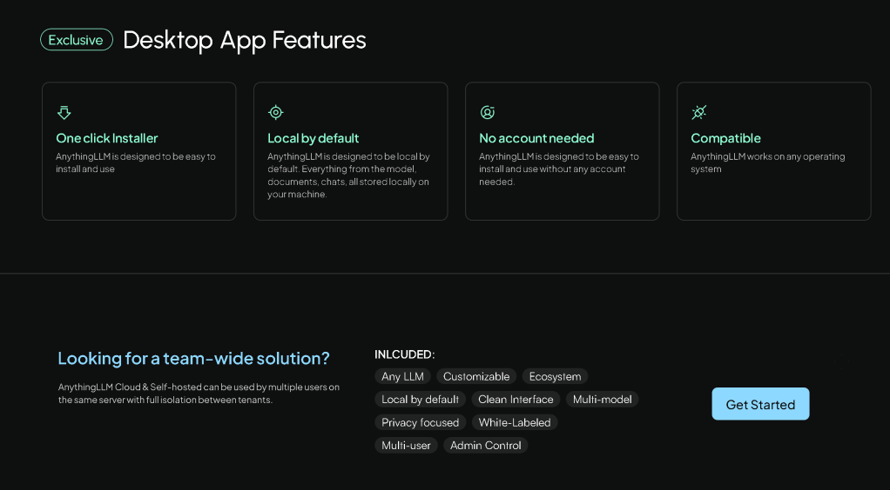

🚀 Unlocking Productivity with AnythingLLM: Your All-in-One AI Companion
Can be attached to LM Studio
Agents have skills

🔮 The Why: Embracing AI for Enhanced Productivity
In today's fast-paced digital landscape, managing and interacting with vast amounts of information can be overwhelming. The need for efficient tools that streamline workflows and enhance productivity has never been greater. Enter AnythingLLM—a revolutionary open-source AI application designed to transform the way we engage with our documents and data.
🎯 The How: Strategies to Leverage AnythingLLM
To fully harness the power of AnythingLLM, consider the following approaches:
-
🌀 Iterate and Articulate: Regularly refine your workflows by integrating AnythingLLM's AI capabilities, allowing for clearer communication and more efficient processes.
-
🌐 Ride the Tech AI Trends: Stay ahead by adopting cutting-edge AI technologies. AnythingLLM supports both local and cloud-based large language models (LLMs), ensuring you have access to the latest advancements without complex setups.
-
🔍 Capture Research Open Source: Leverage the open-source nature of AnythingLLM to customize and adapt the platform to your specific needs, fostering innovation and collaboration.
-
🗂 Organize and Develop: Utilize AnythingLLM's features to structure and manage your projects effectively, drawing inspiration from frameworks like Lacan's theories on language and organization.
🗺 The What: Key Features and Implementation Steps
Key Features:
-
Local and Cloud LLM Support: Run your preferred LLMs locally with a single click or connect to cloud-based engines effortlessly. citeturn0search0
-
Privacy-Focused Design: All data, including models, documents, and chats, are stored and processed locally, ensuring complete privacy. citeturn0search1
-
Multi-Modal Interaction: Engage with text, images, and audio seamlessly, expanding the ways you can interact with your data. citeturn0search0
-
Customizable AI Agents: Create specialized AI agents tailored to specific tasks, enhancing efficiency and personalization. citeturn0search2
-
Developer-Friendly API: Integrate and extend functionalities within existing products through a robust API. citeturn0search0
-
Multi-User Collaboration: Support multiple users with full isolation between tenants, making it ideal for team environments. citeturn0search2
-
Open-Source and Free: AnythingLLM is free to use under the MIT license, encouraging community contributions and transparency. citeturn0search0
Getting Started:
- Download and Installation:
Windows Users: Download the installer and follow the on-screen instructions. citeturn0search3
-
Linux Users: Utilize the provided installation script for easy setup. citeturn0search5
-
Explore Documentation: Familiarize yourself with the platform's capabilities by visiting the official documentation. citeturn0search0
-
Join the Community: Engage with other users and contribute to the project's growth by visiting the GitHub repository. citeturn0search2
By integrating AnythingLLM into your daily routines, you can transform the way you interact with information, leading to increased productivity and streamlined workflows.
🔗 Connect with Me:
-
💼 LinkedIn: https://www.linkedin.com/in/rifaterdemsahin/
-
🐦 Twitter: https://x.com/rifaterdemsahin
-
🎥 YouTube: https://www.youtube.com/@RifatErdemSahin
-
💻 GitHub: https://github.com/rifaterdemsahin
This document was prepared with the assistance of OpenAI's GPT-4 model on February 18, 2025.
AnythingLLM and LM Studio are both open-source applications designed to facilitate interaction with Large Language Models (LLMs) on local machines. Here's a comparative overview of their key features and functionalities:
AnythingLLM:
-
Document Interaction: Enables users to upload and engage with various document types, including PDFs, TXT, and DOCX, within organized workspaces.
-
AI Agents: Allows configuration of agents with specific skills to perform tasks like web browsing and code execution within workspaces.
-
Customization: Supports a range of LLM providers and models, such as OpenAI's GPT-4, Llama, and Mistral, and integrates with vector databases like Pinecone and ChromaDB.
-
Privacy and Control: Operates entirely offline with locally running defaults, ensuring full data privacy.
-
Multi-User Support: Manages multiple users with fine-grained permissions, making it suitable for team collaboration.
LM Studio:
-
Local Model Deployment: A user-friendly desktop application that allows users to discover, download, and run open-source LLMs locally on their computers.
-
Built-in Chat Interface: Provides an intuitive chat UI for interacting with models directly within the application.
-
OpenAI API Compatibility: Runs models through a local server compatible with the OpenAI API, facilitating integration with other applications.
-
Cross-Platform Support: Offers compatibility across various operating systems, including specialized optimizations for Apple Silicon (M1, M2, M3) and support for Windows and Linux platforms.
-
Offline Operation: Enables users to run models entirely offline, ensuring data privacy and security.
Comparison:
-
Integration and Setup: AnythingLLM is designed for seamless integration with both local and cloud-based LLMs, offering a streamlined user experience for quick access to model configurations. In contrast, LM Studio provides a straightforward setup with a focus on local deployment, featuring an intuitive interface for managing models and a built-in chat UI.
-
Functionality: AnythingLLM emphasizes intelligent document interaction and team collaboration, supporting AI agents capable of tasks like web browsing and code execution. LM Studio, on the other hand, focuses on providing a platform for experimenting with open-source LLMs locally, with features like OpenAI API compatibility and cross-platform support.
-
Performance and Customization: Depending on the specific LLMs used, AnythingLLM can offer superior performance in terms of response time and accuracy, particularly when utilizing multiple models concurrently. LM Studio provides optimizations for various hardware configurations, including Apple Silicon and NVIDIA CUDA integration for GPU acceleration, catering to users seeking efficient local model deployment.
In summary, both applications offer robust solutions for interacting with LLMs locally. The choice between AnythingLLM and LM Studio depends on specific needs: AnythingLLM is ideal for users seeking advanced document interaction and team collaboration features, while LM Studio caters to those looking for a user-friendly platform to experiment with and run open-source LLMs on their local machines.
Can you dance
Imported from rifaterdemsahin.com · 2025